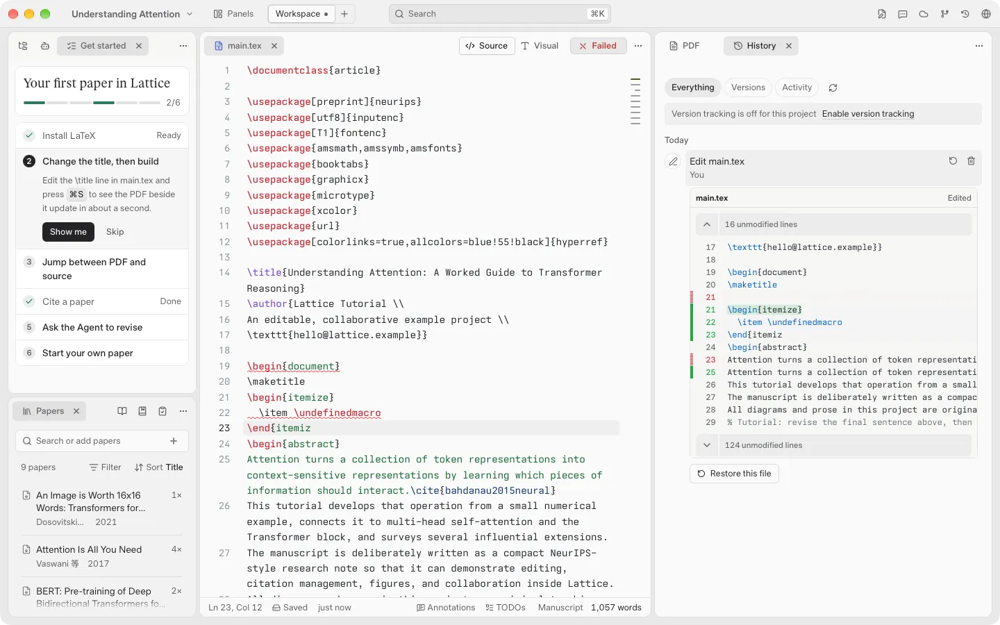
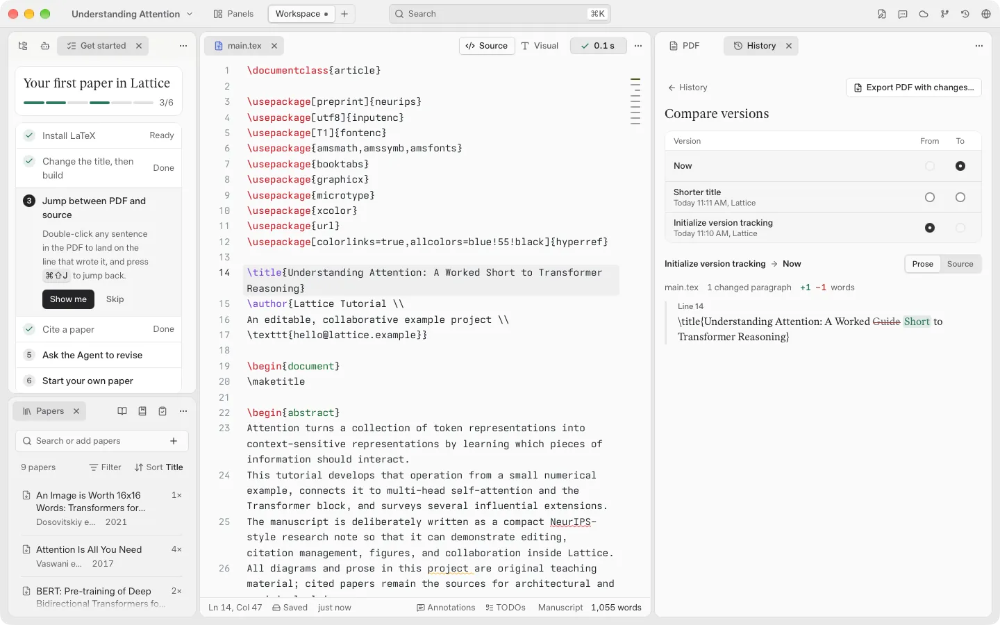

History and Compare versions
Lattice keeps a history of every change to your project, whoever made it: you, the Agent, or a co-author on Overleaf. Open it with the History button in the title bar (the clock), or Panels › History.
Undo a change
Everything lists changes newest first. Click one to see its diff, then Restore this file to put the file back as it was before that change. A restore is itself a new entry, so it can be undone too.

Activity shows the same timeline grouped by what happened, such as builds and Agent turns.
Save versions
Named versions use Git. The first time, Versions offers Enable version tracking, which makes the project a Git repository (an existing repository is used as it is). Then:
- Save version records the project now, with a name you give it.
- Each version can be restored, or compared with now.
Compare versions
In Versions, choose Compare…, then pick a From and a To version (Now is the project as it is on disk). Lattice lists every changed file. Prose shows changed words, which is easier to read for text; Source shows the line diff.
Export PDF with changes… writes a PDF with the differences marked, through latexdiff from your TeX installation. With BasicTeX you may need sudo tlmgr install latexdiff first.

Track changes
Track changes turns on review mode: your edits from then on are marked in the source as you type, and you accept or reject each one, or all at once. It works without Overleaf.